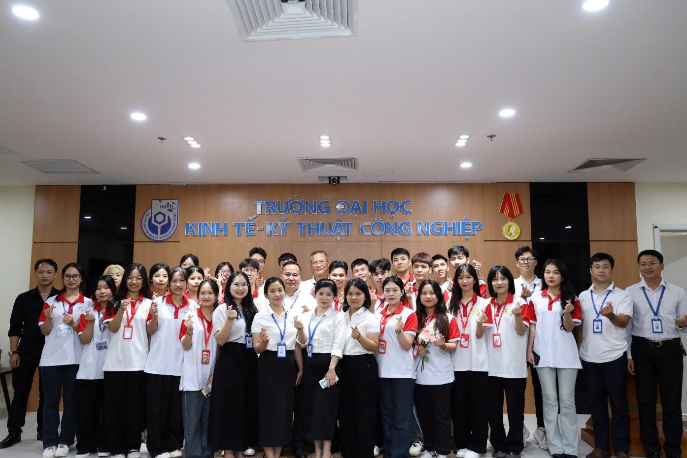
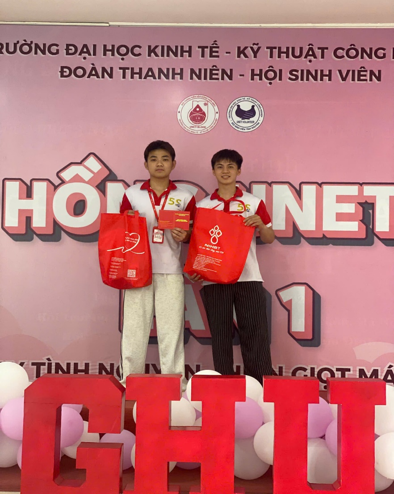
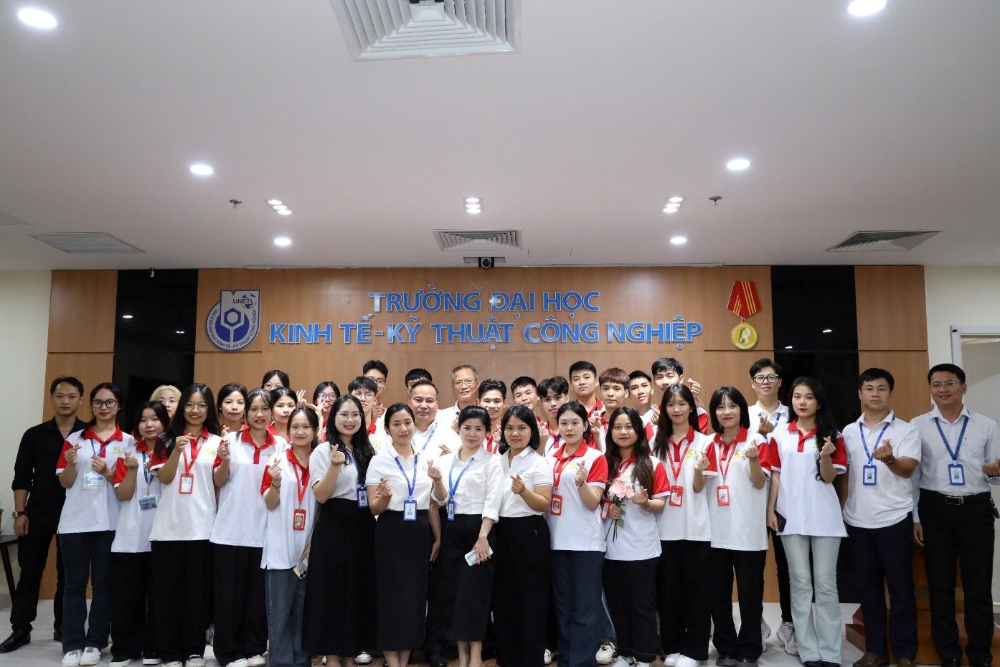
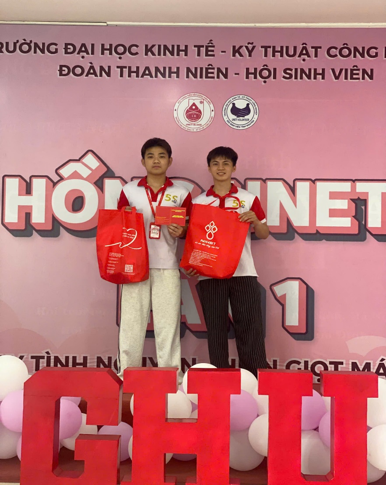

Đảng viên trẻ năng nổ, nhiệt huyết trong các hoạt động phong trào của CLB Khoa và Nhà trường.

Với nhiều bạn trẻ thế hệ Gen Z, được vào Đảng Cộng sản Việt Nam là một cột mốc quan trọng và là lời cam kết với chính mình về con đường cống hiến lâu dài, Trịnh Ngọc Công, hiện đang là sinh viên Khoa Điện - Tự động Hóa của Trường Đại học Kinh tế – Kỹ thuật Công nghiệp, em là một trong số những đảng viên trẻ được kết nạp khi đang là học sinh THPT, em có nhiều thành tích nổi bật trong các hoạt động phong trào của CLB, Khoa và Nhà trường, khẳng định tinh thần tiên phong của thế hệ mới.
Những ngày đầu bước chân vào giảng đường đại học, Công cũng mang theo sự bỡ ngỡ, lo lắng như bao tân sinh viên khác, thật may mắn khi Nhà trường luôn tạo điều kiện cho sinh viên được hoàn thiện và phát triển bản thân một cách tốt nhất với các câu lạc bộ, những bạn trẻ mang sức sống thanh niên luôn cháy bỏng và nỗ lực hết mình với đam mê cùng ước ao của mình, đặc biệt, ngay từ những ngày đầu, Công đã ấp ủ ước mơ được khoác lên mình chiếc áo 5S, mỗi hoạt động mà Công tham gia không chỉ là cơ hội rèn luyện kỹ năng mà còn là hành trình khám phá bản thân, giúp Công nhận ra giá trị của sự cống hiến và gắn kết, góp sức vào các hoạt động, phong trào của Nhà trường, Khoa và CLB SCC như hỗ trợ Ngày hội việc làm, Hỗ Trợ lễ bế giảng, lễ Khai giảng, tham gia hỗ trợ chương trình trả hồ sơ cho anh chị khóa 14, chương trình Hội thao UNETI, tham gia hội thao của khoa, tham gia hiến máu tình nguyện…
Với những nỗ lực không ngừng nghỉ, Công đã được tín nhiệm trở thành đầu mối phụ trách cơ sở Lĩnh Nam của CLB Tuyên truyền Văn hoá Học đường Sinh viên, là một Đảng viên trẻ, Công luôn ý thức rõ vai trò tiên phong, gương mẫu trong học tập, rèn luyện và các hoạt động phong trào, Công xem mỗi nhiệm vụ được giao là một cơ hội để thể hiện bản lĩnh chính trị, phẩm chất đạo đức và tinh thần phụng sự cộng đồng, đúng với lời dạy của Bác Hồ: “Đâu cần thanh niên có, việc gì khó có thanh niên.” Chính nhờ vậy, Công không chỉ là một sinh viên năng nổ mà còn là tấm gương sáng về tinh thần trách nhiệm, lan tỏa hình ảnh đẹp của người Đảng viên trong lòng bạn bè và Thầy cô.
 



Mang trong mình tinh thần trách nhiệm cao, sự nghiêm túc trong công việc và khả năng sáng tạo, Công còn đóng vai trò là một trong những nhân tố cốt lõi thúc đẩy các hoạt động truyền thông và tuyên truyền nếp sống văn hóa học đường, Em luôn tích cực đồng hành cùng các phong trào do Phòng Chính trị và Công tác sinh viên, Đoàn Thanh niên – Hội Sinh viên, các Khoa và đơn vị chức năng tổ chức, góp phần làm nên thành công chung và lan tỏa những giá trị tốt đẹp đến toàn thể sinh viên UNETI. “Nhiều người từng hỏi em rằng việc tham gia nhiều hoạt động Đoàn mang lại điều gì, Với em mỗi người sẽ có góc nhìn khác nhau, nhưng bản thân xem đó là cơ hội để cống hiến, để góp phần tạo nên những chương trình xã hội ý nghĩa, Đó cũng là một phần đẹp đẽ của tuổi trẻ, khi em được đồng hành và trưởng thành cùng tập thể, ngoài ra, khi được là Đảng viên trẻ đại diện cho thế hệ trẻ, em luôn mong muốn lan tỏa sức trẻ, sự nhiệt huyết đến tất cả các bạn sinh viên trong trường.” - Ngọc Công chia sẻ
Không chỉ nổi bật trong các hoạt động sinh viên, em còn duy trì thành tích học tập ổn định, biết cách cân bằng giữa việc học và các hoạt động ngoại khóa, những kỹ năng mà em tích lũy được từ các phong trào đã giúp cậu rèn luyện khả năng quản lý thời gian, làm việc nhóm và giao tiếp hiệu quả – những yếu tố quan trọng cho sự phát triển cá nhân và nghề nghiệp.
“Em xin gửi lời tri ân sâu sắc tới lãnh đạo Nhà trường, các Thầy Cô đã luôn quan tâm, giúp đỡ và tạo điều kiện để em có thể học tập, rèn luyện tại UNETI, em cũng cảm ơn CLB SCC – nơi đã cho em cơ hội được cống hiến, học hỏi và phát triển bản thân, Em tự hào khi được là một phần của đại gia đình UNETI, của Khoa Điện – Tự động hóa cùng CLB Tuyên truyền Văn hóa Học đường, Em mong rằng các bạn sinh viên hãy dành thời gian cho những hoạt động ý nghĩa, mạnh dạn bước ra khỏi vùng an toàn để khám phá bản thân.”
Phòng Chính Trị & Công Tác Sinh Viên (uneti.edu.vn)
 Facebook CLB:
https://www.facebook.com/VHHDSVUNETI
Facebook CLB:
https://www.facebook.com/VHHDSVUNETI
Facebook Đoàn Thanh Niên UNETI:
https://www.facebook.com/DoanTN.HoiSV.Uneti
Facebook Phòng Chính trị & Công tác Sinh viên UNETI:
https://www.facebook.com/CTSV.UNETI
 TikTok CLB:
https://tiktok.com/@uneti.clb.scc
TikTok CLB:
https://tiktok.com/@uneti.clb.scc
✉️ Email SCC: clb.tuyentruyenvhhd@gmail.com
📞 Hotline CLB: 02432336137
🌐 Website Trường: https://uneti.edu.vn